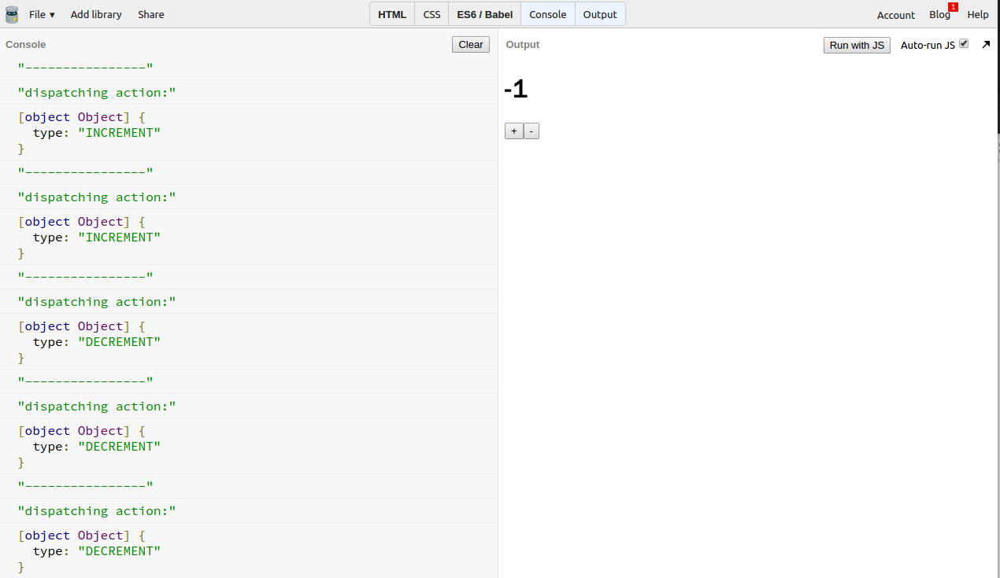
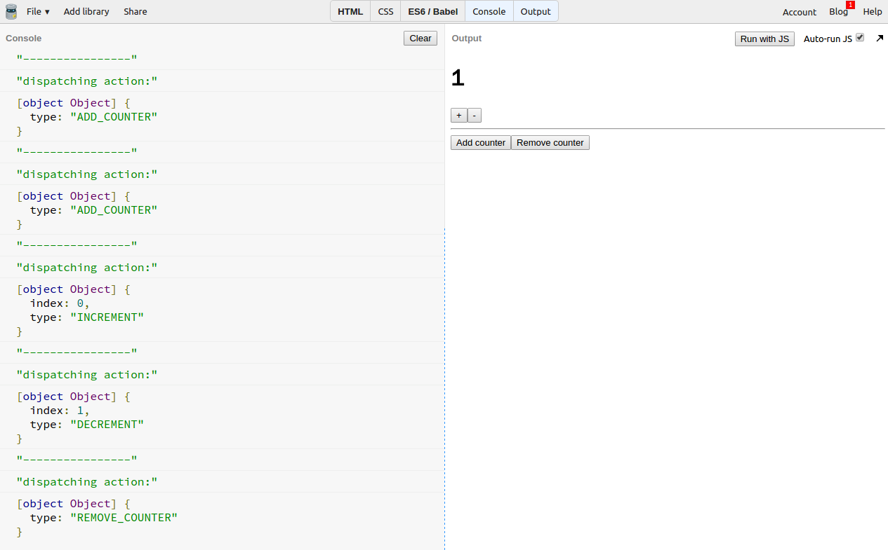
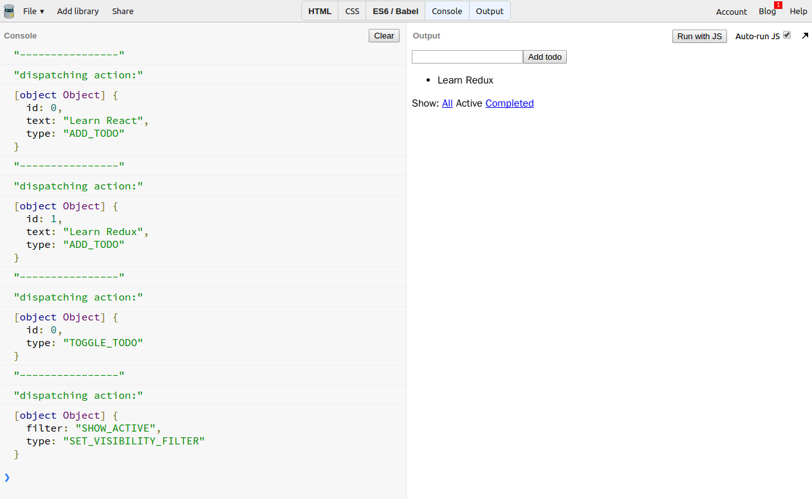

概念
- Redux 第二原则: 状态树这个对象 (state tree) 只能去读，你不可以直接修改它。
- 但是你可以通过触发一个动作 (action) 去使应用的状态产生变化。
这里好像有个矛盾：一方面我们不能去修改状态树，另一方面我们又要通过触发动作去使状态产生变化。我们用个比喻来了解 “修改状态本身" 和 “改变状态” 这两个概念的差别。
比如说你想为你的屋子换个水龙头，“修改状态本身” 就直接把这个屋子的水龙头换掉了。而 “改变状态” 就好像你重新盖个除了水龙头和之前一模一样的屋子，然后把门牌号码换到新的屋子。后面这种做法相当土豪，你可以同时拥有之前和现在的屋子。
action
- 描述状态变化的对象
- action 对象必须要有
type这个属性- 通常
type属性是个字符串
- 通常
下面这个 action 的形容一个递增的变化：
{
type: 'INCREMENT'
}下面这个 action 的形容一个设定计数器为 100 的变化：
{
type: 'SET_COUNTER'
value: 100,
}例子 1 - 计数器
 演示：https://jsbin.com/tutoxim/edit?console,output
这个简单的计数器里只有两种动作。
每个动作都有 type 属性用来描述动作。
- "INCREMENT" 计数器自增
- "DECREMENT" 计数器自减
不需要其他额外信息就足够描述动作。
所有动作都可以打印到控制台。
例子 2 - 多个独立的计数器
 演示：https://jsbin.com/topexiy/edit?console,output
添加了两种新的动作
每种动作都有 type 属性用来描述动作。
- "ADD_COUNTER" 添加计数器
- "REMOVE_COUNTER" 移除计数器
这两种动作无需提供除了
type外的其他信息。
为"INCREMENT"和"DECREMENT"动作添加额外的信息
- 只用
type已经无法准确描述动作。 - index 用于指定哪个计数器发生变化。
- 不同计数器不会相互影响。
- 只用
例子 3 - Todo 应用
 演示：https://jsbin.com/gitehe/edit?console,output
每一个操作都对应一个动作。
- 每种动作都有 type 属性用来描述动作。
添加
type以外的信息可以准确描述动作。
总结
/**
* action: { type: string | any, ...otherInfos }
* 用于描述状态的变化。
* 是一个普通的对象。
* 一定要有 "type" 属性用于描述类型。
* type 通常是，但不一定是字符串。
*/
// 示例
const counterIncrement = {
type: 'INCREMENT'
}
const specifyCounterIncrement = {
type: 'INCREMENT',
index: 1
}
const- 你不需要直接修改应用状态。
- 使用动作 (
action) 描述状态 (state) 的变化。
思考： （答案将在下一节公布）
- 为什么
action里的type属性通常使用字符串？
上节解答:
- 为什么示例代码声明 state 用到的是 const 而不是 let?
- state 是只读的，不能直接去修改。